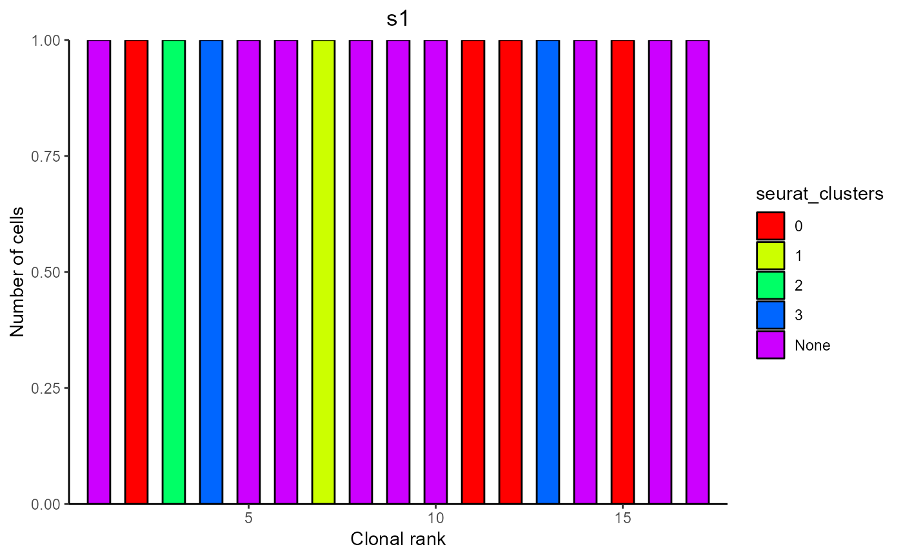
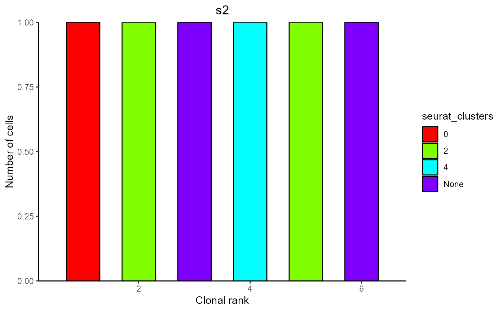
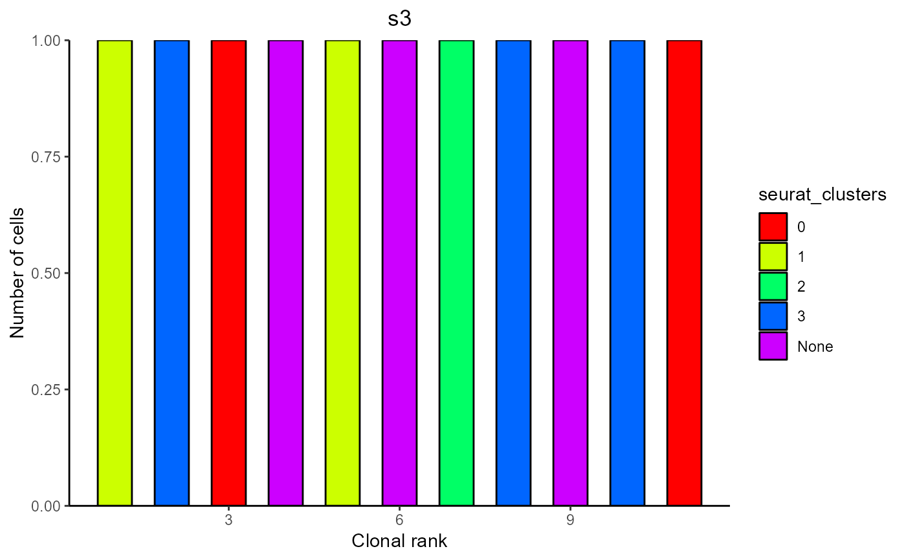

R/VDJ_clonal_expansion.R
VDJ_clonal_expansion.RdClonal frequency plot displaying clonal expansion for either T and B cells with Platypus v3 input. Only available for Platypus "v3" available. For v2 plotting of B cell clonotype expansion and isotypes please refer to VDJ_isotypes_per_clone.
VDJ_clonal_expansion(
VDJ,
celltype,
clones,
subtypes,
isotypes.to.plot,
species,
treat.incomplete.clones,
treat.incomplete.cells,
group.by,
color.by,
variant.plot
)VDJ dataframe generated using the VDJ_GEX_matrix function (VDJ_GEX_matrix.output[[1]])
Character. Either "Tcells" or "Bcells". If set to Tcells bars will not be colored by default and the parameters treat_incomplete_cells, treat_incomplete_clones, subtypes and species are ignored. The color.by and group.by arguments work identically for both celltypes. If none provided it will detect this param from the celltype column.
numeric value indicating the number of clones to be considered for the clonal expansion plot. Default value is 50. For a standard plot more than 50 is discouraged. When showing only one - possibly rare - isotype via isotypes.to.plot it may be useful to set this number higher (e.g. 100-200)
Logical indicating whether to display isotype subtypes or not.
Character vector. Defaults to "all". This can be set to any number of specific Isotypes, that are to be shown exclusively. For example, to show only clones containing IgG, input "IGHG". If only wanting to check clones with IgA and IgD input c("IGHA","IGHD"). Works equally if subtypes are set to TRUE. Is ignored if color.by is not set to "isotype"
Character indicating whether the samples are from "Mouse" or "Human". Default is "Human".
Character indicating how to proceed with clonotypes lacking a VDJC (in other words, no cell within the clonotype has a VDJC). "exclude" removes these clonotypes from the analysis. "include" keeps these clonotypes in the analysis. In the plot they will appear has having an unknown isotype.
Character indicating how to proceed with cells assigned to a clonotype but missing a VDJC. "proportional" to fill in the VDJ isotype according to the proportions present in of clonotype (in case present proportions are not replicable in the total number of cells e.g. 1/3 in 10 cells, values are rounded to the next full integer and if the new counts exceed the total number of cells, 1 is subtracted from the isotype of highest frequency. If the number is below the number of cell, 1 is added to the isotype with lowest frequency to preserve diversity), "exclude" to exclude them from analysis and rank clonotypes only by the number of cells with a heavy chain. This ranking may deviate from the frequency column in the clonotype table. CAVE: if treat_incomplete_cells is set to "exclude", clonotypes lacking a VDJC entierly will be removed from the analysis. This results in a similar but not identical output as when treat_incomplete_clones is set to true. The two parameters are thereby non-redundant.
Character. Defaults to "sample_id". Column name of VDJ to split VDJ by. For each unique entry in that column a plot will be generated. Therefore plots can be generated by sample_id, group_id or any other metadata item.To get plots for the whole repertoire set to "none"
Character. Defaults to "isotype". If set to "isotype" bars are colored by the respective IgH chain or in grey for T cells. This can alternatively be set to any column name of the VDJ. This allows coloring clones by their V_gene usage or by GEX clusters
Logical indicating whether to plot the output showing the variants or not.
Returns a nested list. out[[1]] are plots out[[2]] are raw datatables containing also barcode and CDR3 information
#Standard B cell plot for platypus version v3
#Will generate one plot per sample (from sample_id column)
clonal_out <- VDJ_clonal_expansion(VDJ = Platypus::small_vgm[[1]],
celltype = "Bcells", clones = 30,subtypes = FALSE, species = "Mouse"
,treat.incomplete.clones = "exclude"
,treat.incomplete.cells = "proportional")
#Regrouped and recolored plot in v3
#Will generate a plot for each sample.
#Bars are filled by the sample with the highest proportion of cells in a given clonotype
clonal_out <- VDJ_clonal_expansion(VDJ = Platypus::small_vgm[[1]]
, celltype = "Bcells", clones = 30,subtypes = FALSE, species = "Mouse"
,treat.incomplete.clones = "exclude"
,treat.incomplete.cells = "proportional"
,color.by = "seurat_clusters") #change grouping with group.by = "column name"
clonal_out[[1]] #list of plots
#> [[1]]

#>
#> [[2]]

#>
#> [[3]]

#>
clonal_out[[2]] #list of source dataframes
#> $s1
#> Counts Color ClonalRank clonotype_id VDJ_cdr3s_aa
#> 1 1 None 1 clonotype1243 CVRSWDYW
#> 2 1 0 2 clonotype1364 CARWNWYFDYW
#> 3 1 2 3 clonotype1451 CARDYYGSSGYW
#> 4 1 3 4 clonotype1514 CARTTGAWFAYW
#> 5 1 None 5 clonotype1682 CARGKNGAWFAYW
#> 6 1 None 6 clonotype1725 CARVNLHAMDYW
#> 7 1 1 7 clonotype1923 CARNGYYYGSSTFDYW
#> 8 1 None 8 clonotype2040 CVRGGYDYDRDYFDFW
#> 9 1 None 9 clonotype2053 CARSSLYYGNFYFDYW
#> 10 1 None 10 clonotype2069 CARWVYQTRAMDYW
#> 11 1 0 11 clonotype2100 CARDYYGSSLRYFDVW
#> 12 1 0 12 clonotype2271 CTFRIYYYGSSPYYFDYW
#> 13 1 3 13 clonotype2276 CTRREIYDGLSYYAMDYW
#> 14 1 None 14 clonotype2287 CARPPYYYGSSPYAMDYW
#> 15 1 0 15 clonotype2295 CVRQNYGSSHWYFDVW
#> 16 1 None 16 clonotype2368 CARIAFPAYYSNYRGFAYW
#> 17 1 None 17 clonotype2386 CTRNMRLRRGTGTGYAMDYW
#> VJ_cdr3s_aa barcode
#> 1 CQQYNSYPLTF s1_CTACGTCCAAAGGCGT-1
#> 2 CSQSTHVPWTF s1_TAGTGGTCAAGCGATG-1
#> 3 CALWYSNHLVF s1_AGACGTTTCCACGTGG-1
#> 4 CGVGDTIKEQFVYVF s1_GGGAATGCAGTGGAGT-1
#> 5 CWQGTHFPLTF s1_TACTTGTCACCAGGCT-1
#> 6 CQHFWGTPRTF s1_GCTGGGTGTCCAGTTA-1
#> 7 CQQSNSWPLTF s1_TAAACCGAGCGCTCCA-1
#> 8 CAQNLELPYTF s1_ACGATGTTCAAACCGT-1
#> 9 <NA> s1_CCCAGTTAGCAGGTCA-1
#> 10 CQQGQSYPLTF;CQQGDTLPWTF s1_CCAATCCTCTGCAGTA-1
#> 11 CKQAYDVPYTF s1_AAGGCAGTCGATCCCT-1
#> 12 CQQHYSTPFTF s1_GATCGATAGTTAGCGG-1
#> 13 CQQDYSSPWTF;CLQYASSPWTF s1_TTAACTCCAACCGCCA-1
#> 14 CQQHYSTPLTF s1_TCTCATAGTGTTGAGG-1
#> 15 CQQWSSNPPTF s1_CAACCTCTCTCCAGGG-1
#> 16 CQNDYSYPLTF s1_CAGAATCAGCAATCTC-1
#> 17 CLQYDNLLWTF s1_CGTTGGGAGGGATCTG-1
#>
#> $s2
#> Counts Color ClonalRank clonotype_id VDJ_cdr3s_aa
#> 1 1 0 1 clonotype516 CARNRITTVVAPMDYW;CARKDYARGDYW
#> 2 1 2 2 clonotype634 CARPPLTGFAYW
#> 3 1 None 3 clonotype635 CARKSSHWYFDVW
#> 4 1 4 4 clonotype649 CASGGGNPWYFDVW
#> 5 1 2 5 clonotype686 CTRGRRPEGYFDYW
#> 6 1 None 6 clonotype734 CARCGYYGYHAMDYW
#> VJ_cdr3s_aa barcode
#> 1 CQQSNSWPLTF;CQQGSSIPLTF s2_AGGTCATTCTTGGGTA-1
#> 2 CHQYLSSWTF s2_CTACCCAAGACTAGAT-1
#> 3 CQQHLHIPRTF s2_CCTCTGACAGACGCAA-1
#> 4 CQQHYSTPYTF s2_CCTCTGACACCAGATT-1
#> 5 CQQGSSIPLTF s2_TACGGATGTGGGTCAA-1
#> 6 CALWYSTRYVF s2_GACCAATTCTTCATGT-1
#>
#> $s3
#> Counts Color ClonalRank clonotype_id VDJ_cdr3s_aa VJ_cdr3s_aa
#> 1 1 1 1 clonotype1028 CAREGYYGSSPYAMDYW CLQYDNLFTF
#> 2 1 3 2 clonotype1056 CARKTEGVYYGNYVFDYW CQQSKEVPPTF
#> 3 1 0 3 clonotype141 CARWGIYDGYYGDAMDYW CALWYSNHLVF
#> 4 1 None 4 clonotype390 CARTFAYW CLQYASSPWTF
#> 5 1 1 5 clonotype464 CARMVTGAYW CQNDYSYPLTF
#> 6 1 None 6 clonotype478 CARWDVYFDYW CQQGNTLPRTF
#> 7 1 2 7 clonotype592 CAREATVVADYW CQQSNEDPRTF
#> 8 1 3 8 clonotype649 CARPNSLDWYFDVW CALWYSNHFIF
#> 9 1 None 9 clonotype777 CARGGVTTGEFAYW CQQYWSTPFTF
#> 10 1 3 10 clonotype897 CARPLTGTSGAMDYW CQHFWSTPPWTF
#> 11 1 0 11 clonotype921 CARKRDYDSYAMDYW CQQSNEDPWTF
#> barcode
#> 1 s3_TGGGCGTTCGGTTCGG-1
#> 2 s3_CCCAGTTCACTCGACG-1
#> 3 s3_ATGCGATTCCCATTAT-1
#> 4 s3_AGCGTATCACGGACAA-1
#> 5 s3_GTGCGGTAGCCCAGCT-1
#> 6 s3_CAGAATCGTTATCCGA-1
#> 7 s3_ATTATCCAGTTCGATC-1
#> 8 s3_TCTTCGGGTGCTCTTC-1
#> 9 s3_GCTCCTACAGAGTGTG-1
#> 10 s3_TCTCTAACATGGTCTA-1
#> 11 s3_GGTGCGTTCGGCCGAT-1
#>
#T cell plot with recoloring by vgene
#VDJ_clonal_expansion(VDJ = Platypus::small_vgm[[1]]
#,celltype = "Tcells", clones = 30, group.by = "sample_id"
#,color_by = "VDJ_vgene")
#Plotting only IgD clones. Increased the value for clones to scan more of the dataset
#VDJ_clonal_expansion(VDJ = Platypus::small_vgm[[1]]
#,celltype = "Bcells", clones = 150,subtypes = FALSE
#,species = "Mouse",treat.incomplete.clones = "include"
#,treat.incomplete.cells = "proportional", isotypes.to.plot = "IGHD")
#Plotting only clones containing cells with the IGHG2c isotype (For murine data only!)
#VDJ_clonal_expansion(VDJ = Platypus::small_vgm[[1]]
#,celltype = "Bcells", clones = 150,subtypes = TRUE, species = "Mouse"
#,treat.incomplete.clones = "exclude"
#,treat.incomplete.cells = "proportional", isotypes.to.plot = "IGHG2c")